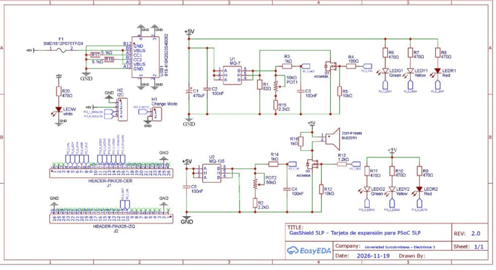
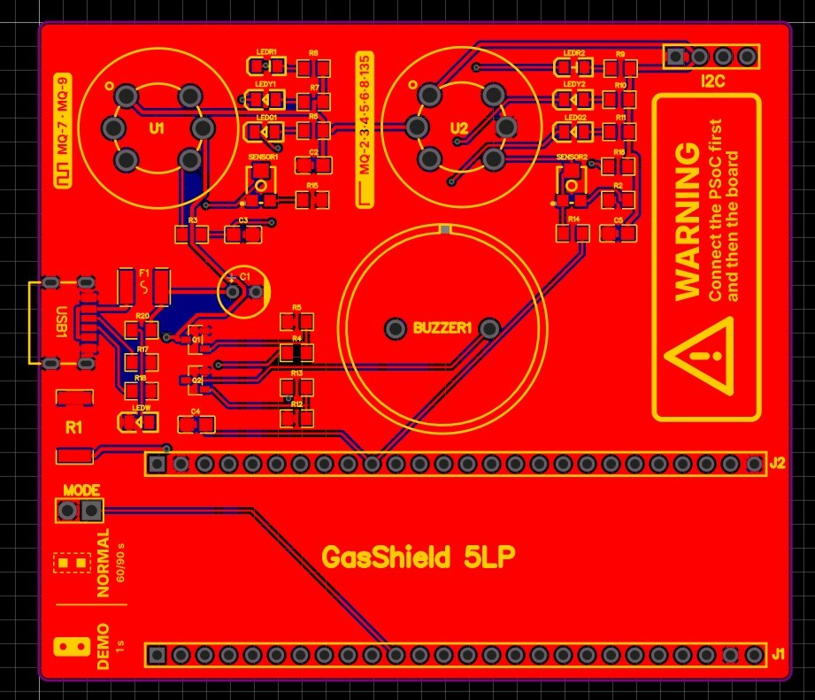
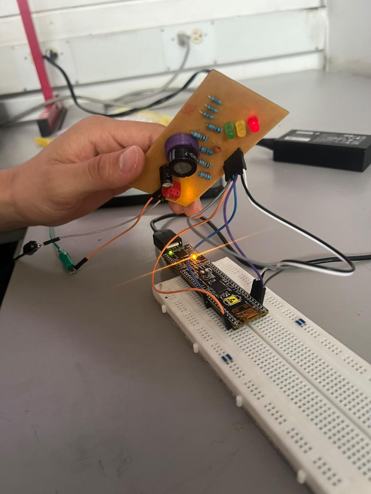
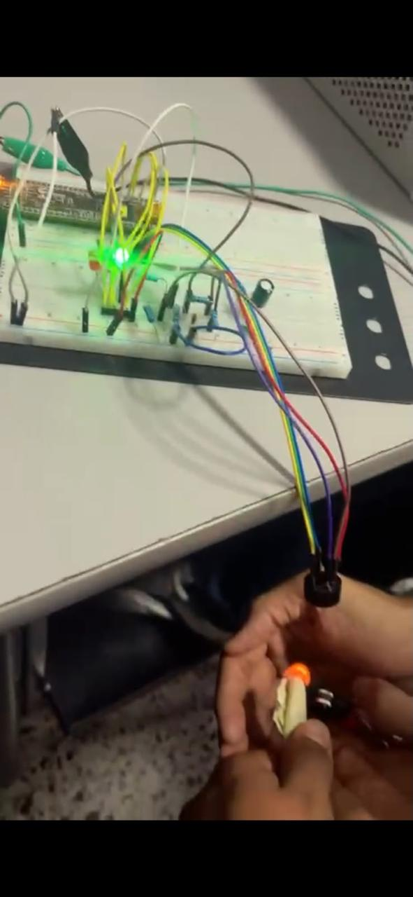
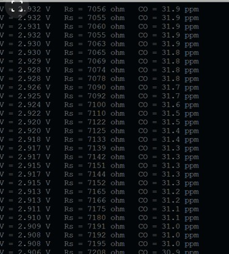
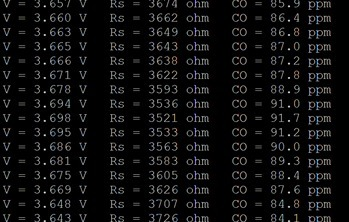

GasShield 5LP
Tarjeta de expansión electrónica para detección y monitoreo de gases sobre PSoC 5LP
Desarrollo de ingeniería electrónica realizado en la Universidad Surcolombiana, enfocado en adquirir, acondicionar y procesar señales de sensores de gas en tiempo real.
Contexto y alcance
Durante la calcinación de biomasa en los hornos del Laboratorio de Aguas de la Universidad Surcolombiana se generan emisiones tóxicas, principalmente monóxido de carbono. Ante la ausencia de equipos de supervisión ambiental, se diseñó una shield electrónica capaz de capturar y visualizar el comportamiento de sensores de gas.
Variación de señal
Incremento registrado frente a estímulos de humo en laboratorio.Errores ERC / DRC
La revisión 2.1 superó todas las verificaciones de diseño PCB.Costo optimizado
Cotización para 5 placas (2 ensambladas SMD; sin THT ni envío).
Aportes técnicos en el equipo
Desarrollo de firmware
Programación de la PSoC 5LP: muestreo analógico con el ADC, temporización del ciclo térmico del calefactor del MQ-7 y transmisión serial al PC.
Validación en laboratorio
Mediciones eléctricas y ensayos de respuesta del sistema, desde el montaje en protoboard hasta las pruebas sobre la PCB prototipo.
Diseño de circuito y PCB
Colaboración en el levantamiento del esquemático y en el enrutamiento de pistas de la tarjeta.
Diseño y pruebas
La PSoC 5LP opera como unidad central de adquisición, mientras la tarjeta de expansión integra dos sensores (MQ-7 y MQ-135) con su etapa de acondicionamiento, potenciómetros de ajuste y tres LEDs de estado por canal. Completan la placa un zumbador, alimentación USB, puerto I2C, jumper de modo y cabeceras de acoplamiento.


Ensayos experimentales y mediciones
Se realizaron pruebas en banco para comprobar los regímenes eléctricos del ciclo de calentamiento del sensor y su sensibilidad ante agentes externos.


| Parámetro eléctrico medido | Resultado |
|---|---|
| Corriente en fase alta | 140,2 mA |
| Corriente en fase baja | 47,5 mA |
| Tensión en fase alta | 4,59 V |
| Tensión en fase baja | 1,39 V |
| Variación de señal frente a humo | +90 % |
Adquisición y alertas
El firmware digitaliza las señales analógicas mediante el ADC y transmite voltaje, resistencia del sensor (Rs) y concentración estimada (ppm) por comunicación serial. Desliza la barra para probar la lógica de alertas visuales programada en la placa:


Del prototipo a manufactura
El desarrollo evolucionó de forma iterativa desde una prueba de concepto en banco hasta una PCB optimizada y cotizada para producción industrial.
Prototipo inicial
Montaje base, programación de la PSoC 5LP y lectura de señales del sensor MQ-7.
Pruebas de banco
Caracterización eléctrica y ensayos con humo para detectar mejoras de diseño.
Revisión 2.0
Rediseño integral del circuito y trazado con enfoque hacia fabricación industrial.
Optimización 2.1
Selección eficiente de componentes y depuración de pistas para reducir costos.
PCB 2.0
USD 29,98Cotización JLCPCB sin cupones.PCB 2.1
USD 15,65Reducción del 47,8 % en costo de fabricación.Cotizaciones generadas en JLCPCB para 5 tarjetas PCB, incluyendo ensamble SMD en 2 unidades (no incluye componentes THT ni envío). Ambas versiones quedaron verificadas digitalmente y listas para fabricar.
Aprendizajes y proyección
Resultados del proyecto
GasShield 5LP unió en un mismo desarrollo el diseño electrónico, la programación de microcontroladores y la instrumentación aplicada a la detección de gases.
Los ensayos en laboratorio validaron el desempeño del prototipo: capturó las señales analógicas, gestionó el ciclo térmico del sensor MQ-7, envió los datos vía serial y respondió de manera consistente frente a los estímulos aplicados.
Las observaciones obtenidas durante estas pruebas permitieron detectar puntos de mejora clave que guiaron el rediseño del circuito y las versiones preparadas para manufactura industrial.
Aprendizajes personales
El desarrollo de este sistema consolidó mis competencias en programación embebida, configuración de módulos ADC, comunicación serial y control de etapas electrónicas.
De igual forma, gané experiencia práctica en el levantamiento de esquemáticos, el enrutamiento de pistas en PCB y la verificación experimental de hardware en banco.
La lección más valiosa fue dimensionar la importancia de las mediciones físicas al construir un prototipo, ya que revelan las discrepancias entre el comportamiento teórico esperado y el funcionamiento real del circuito.
Proyección del proyecto
Si bien la etapa académica finalizó, las revisiones industriales diseñadas dejan una base sólida para futuros desarrollos, incluyendo la ampliación del firmware, la calibración formal de los sensores y la validación en condiciones reales de operación.
¿Te interesa este proyecto?
Escríbeme si deseas conocer más detalles técnicos o explorar una colaboración.